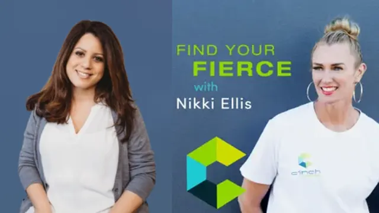

How To Connect With Your Spirit Guides
Adult Chair Podcast
Explore Michelle Galoob's insights on intuition, spirit guides, and inner wisdom. Hear her transformative journey, practical tips, and a live mini-reading with host Michelle Chalfant.
Michelle Galoob has been interviewed on intuition, spirit guides and the Akashic Records on these shows.
Adult Chair Podcast
Explore Michelle Galoob's insights on intuition, spirit guides, and inner wisdom. Hear her transformative journey, practical tips, and a live mini-reading with host Michelle Chalfant.
Women in the Arena Podcast
Discover Michelle Galoob's journey from logic to intuition with host Audra Agen. Gain insights on developing intuitive skills, connecting with spirit guides, and embracing spiritual growth.
Life is a Garden Podcast
Join Michelle Galoob with host Alicia Blas as she shares her journey from reluctance to embracing her intuitive gifts. Learn how to tap into your intuition and find clarity, purpose, and flow in your life.

Find Your Fierce Podcast
Explore Michelle Galoob's work with host Nikki Ellis. Known for her intuitive insights and holistic approach, Michelle empowers clients to embrace authenticity, trust their intuition, and manifest their highest potential.
Famous Interviews with Joe Dimino
Discover Michelle Galoob's inspiring journey with host Joe Dimino. From a career in fashion to becoming an intuitive guide, Michelle shares how she embraced her higher self, unlocked her intuitive gifts, and found her true calling through spiritual connection.
Questions before you book? Reach Michelle directly.
Tel: 424.777.3672
Email: michellegaloob@gmail.com
PLACEHOLDER — contact form not recreated. The live Wix contact form and mailing-list form submit to Wix, so this static preview does not include them (no new form endpoints). At launch: keep the Wix form, or connect the existing Kit opt-in. Phone and email above are live.
See readings & book